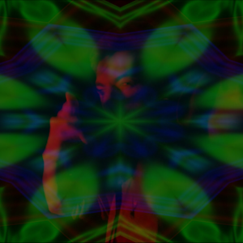

Videojockey VJ
¿Qué es un VideoJockey (VJ)?
Un VJ, o Video Jockey, es un artista que se especializa en la creación y manipulación en tiempo real de contenido visual. Generalmente para eventos en vivo como conciertos, festivales, discotecas y otros espectáculos. Así como un DJ mezcla música, un VJ mezcla y manipula imágenes y videos en tiempo real, sincronizándolos con la música o el ambiente del evento. Las visuales pueden ser proyectadas en pantallas LED o proyectores.
¿Qué hace un VJ?
Un VJ crea contenido visual, desde generación de visuales hasta edicion de videos. Los VJs reaccionan en tiempo real a la música, cambiando los visuales en sincronía con el ritmo, los cambios de tempo y las transiciones musicales. Por esta razón, trabajan en conjunto con DJs, bandas o productores de música para crear una experiencia audiovisual coherente. En algunos casos, realizan mapping, que es la proyección de imágenes sobre superficies tridimensionales como edificios, esculturas u objetos, adaptando los visuales a la forma y características de estas superficies.
YO como un VJ
Tuve prácticas de VJing en la universidad como trabajos prácticos.
Realicé Video Mapping y cambios de visuales en tiempo real.
No soy un DJ, aunque un día espero serlo, pero soy un VJ.
Acompaño la música del DJ mezclando imágenes/video en vivo.
En mis prácticas, mezclo previamente la música (aunque no tenga la habilidad que anhelo).
Personalmente práctico con música electrónica, ya que es mi favorita.
¿Por qué es importante un VJ?
Los visuales sincronizados con la música crean una experiencia más rica y envolvente para el público. Los cambios visuales pueden influir en la energía y el ambiente del evento, potenciando el impacto de la música. La creatividad y el estilo de un VJ pueden añadir una dimensión artística única al evento, diferenciándolo de otros.